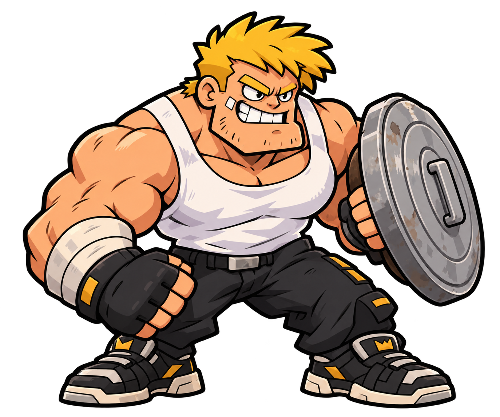
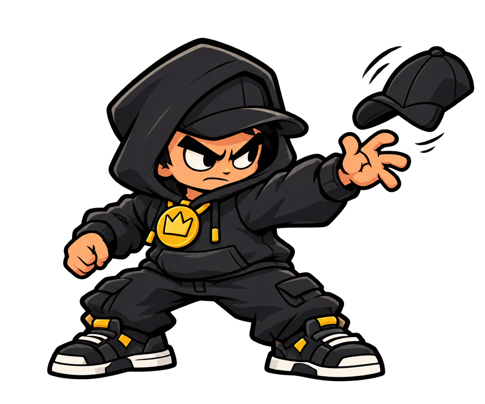
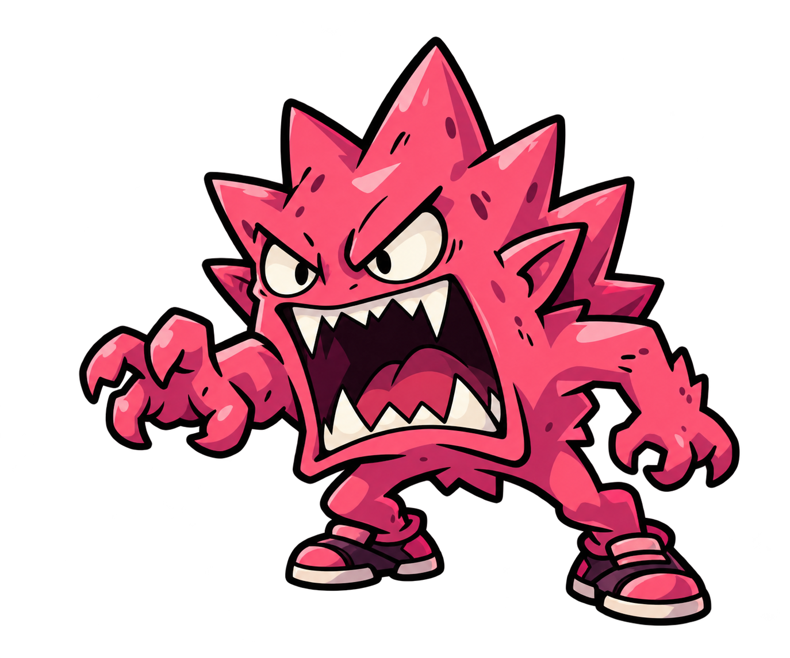
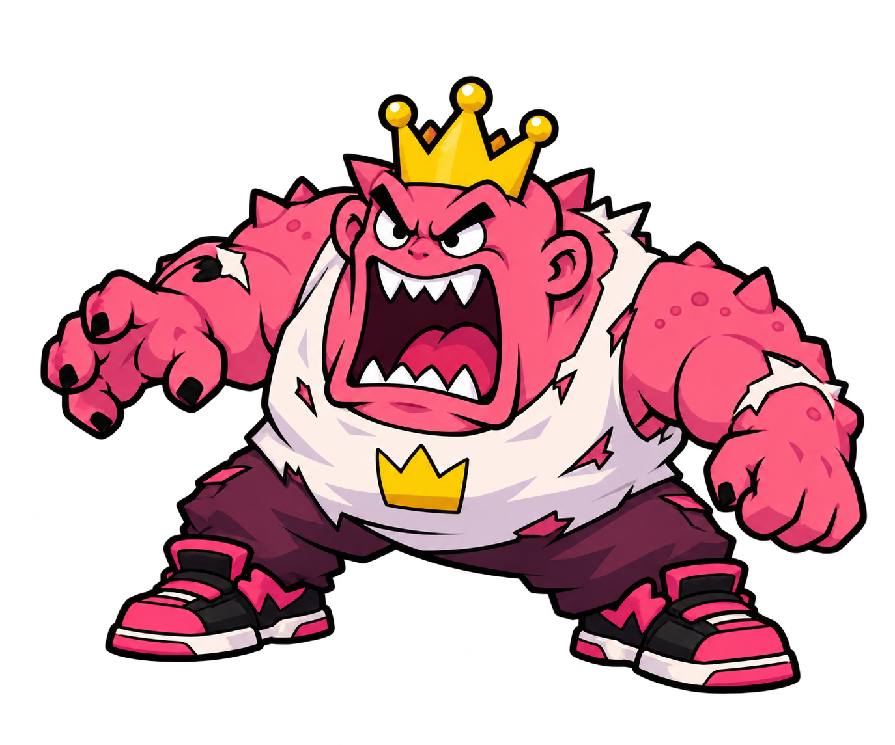
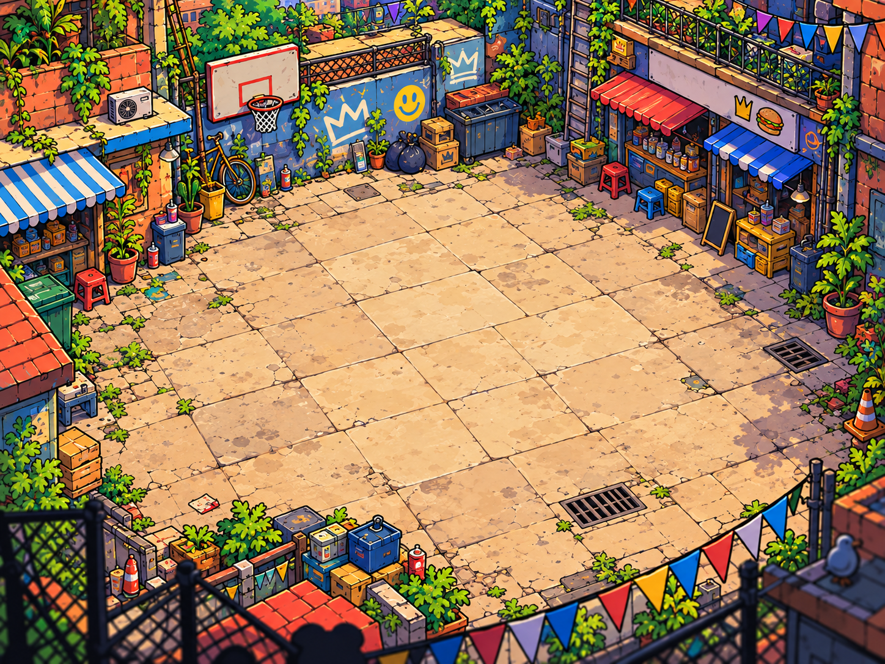
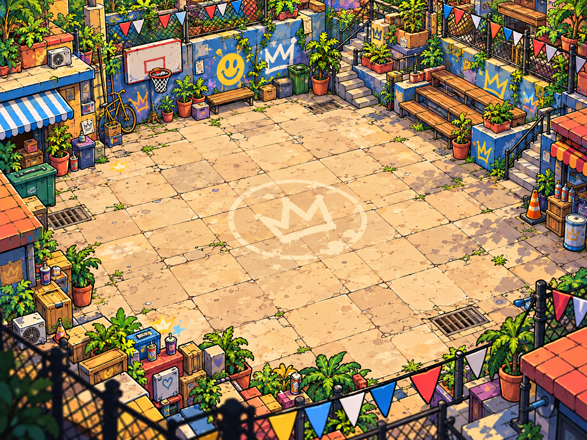
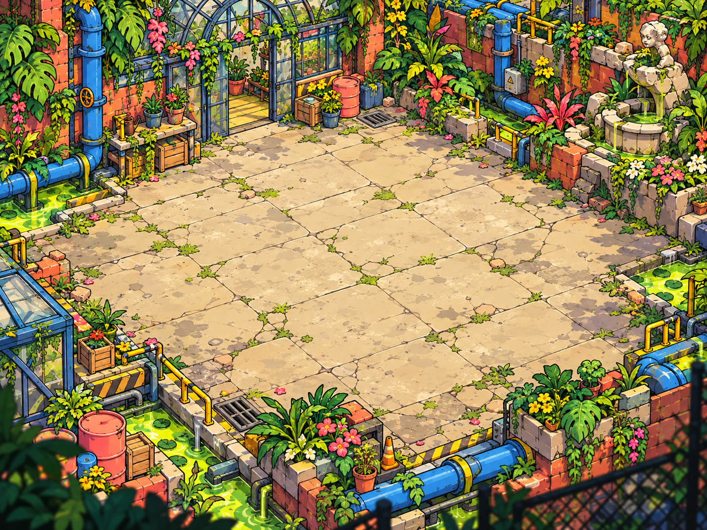
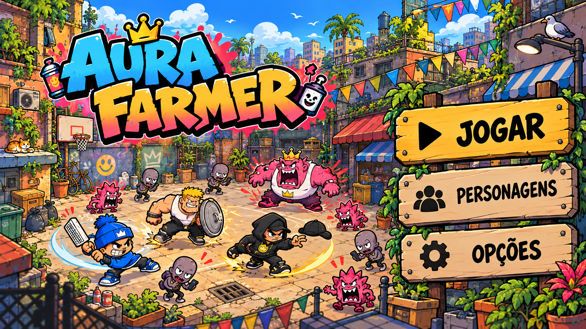

10 ilustrações originais aprovadas · V1 · 14 outubro 2026. As animações do jogo usam folhas PNG próprias derivadas desta identidade.
▶ Explorar a galeria interativa das animações dos três personagens atuais







